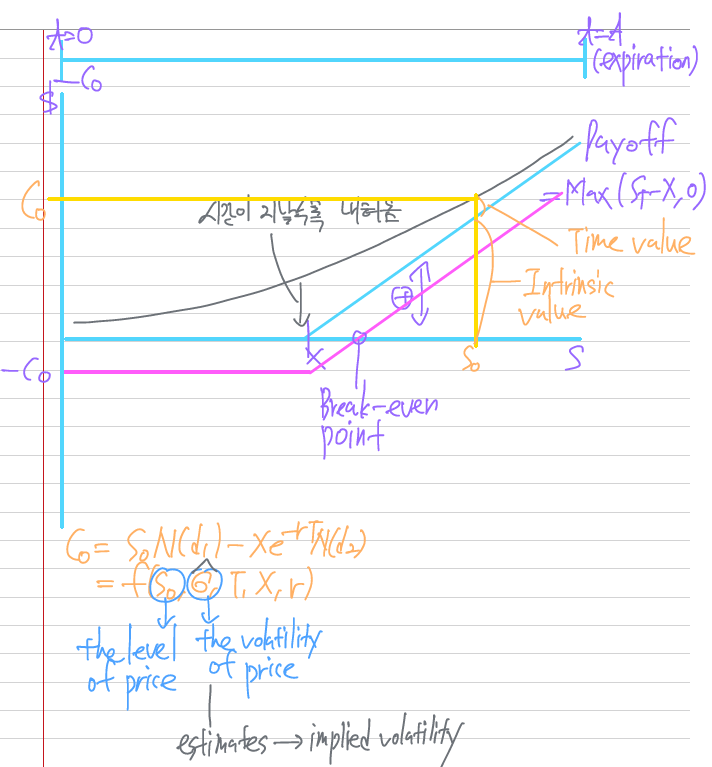

Derivatives and currency management
Options basics-value at expiration and profit at expiration

The primary focus is on the way in which derivative contracts (instruments whose values derive from the economic performance of underlying securities, currencies, or other instruments or factors) may be used to hedge, or change the degree of exposure to, existing positions (for example a holding of a stock, or the exposure to a foreign currency caused by the ownership of an asset or liability in that currency).
Reading 8 deals with options, mainly focused on options on individual stocks, although the principles apply equally well to options on any other instruments.
The sequence of topics in our coverage of Reading 8 differs from the LOS order. We start by looking at the payoffs and profits associated with holding option positions to expiration.
take a position in something = invest
- long - profit when something up
- short - profit when something down

goals of derivatives
- hedge
- change the degree of exposure

In particular, distinguishing between option value and profit (respectively pre- and post-initial premium), and the graphical representation of how they vary with differing values of the underlying price, is very helpful when we move on to analyze more complex strategies.
Each option contract will specify the underlying to which the right relates:
- Underlying include stocks and stock indices, bonds and bond futures, currencies, commodities, and more abstract factors such as stock volatility.
Intrinsic value and time value
The key determinants of an option’s value are:
- the strike price
- the current level of the underlying
- the remaining time to expiration
- the volatility of the underlying (the expected annualized standard deviation of the underlying over the period to option expiration)
Market participants may not agree on what an option is worth-most likely because they disagree on the appropriate figure to use for volatility. However, note that all options that trade on exchanges will have a value, which is reflective of the consensus at that point in time. The current value of an option can be used to infer the consensus estimate of volatility for the underlying, known as implied volatility. This is done by working backwards through a pricing model, given the other factors can be directly observed.
Note that implied volatility is not the same as historical (realized) volatility, which is the square root of the actual realized variance of returns to date.
It is important to note that the volatility that is used to determine the option value is an estimate of the volatility looking forward, which is not the same as actual movement in the stock price.
Note that the intrinsic value is not the same as the profit to the long, which would have to factor in the premium that the long originally paid for the option. This means that it is perfectly possible for an option to be ITM, but for exercise to result in a loss to the long (if the intrinsic value < initial premium paid).
At any point before expiration an option also has time value, which reflects what might happen over its remaining life.
A couple of general principles are worth remembering, namely that with all other factors held constant:
- higher volatility means higher option premiums (both for calls and puts)
- less time to expiry means lower option premiums (both for calls and puts)
Data for examples

Basic at-expiration payoff diagrams for calls and puts
Calls


This means that if we know the shape of the value line for a strategy, the profit line will have exactly the same shape.

It is clear that the maximum loss from a long call occurs when the option expires OTM with zero value, thus equals the premium paid.
A long call has no maximum profit-the higher the stock price at expiry, the higher the profit on the call, with no upper limit.
This means that equivalent long and short positions will have identical breakeven values for the underlying, while their maximum losses and profits will just swap around.

The basic motivation for buying a call is to profit from a rise in the underlying price, while limiting the downside.
When a call is sold (without any hedging position in place) then the position is described as a naked (uncovered) call, and limited upside from falls in the underlying price is balanced against unlimited potential losses from the underlying rising.
Puts


The basic motivation for buying a put is to profit from a fall in the underlying price, while limiting the downside.
When a put is sold limited upside from rises in the underlying price is balanced against large (although limited) potential losses from the underlying falling.
Writing a put option and simultaneously depositing the exercise price into a designated account is called writing a cash-secured put, thereby the long is assured that the put writer would be able to purchase the stock, if called on to do so. Simply writing a put without doing this is called a naked put.
LOS 8.a: Demonstrate how an asset’s returns may be replicated by using options.


Suppose both options were for May expiration, then the premium paid for the call would have been $6.26, while the premium received on the put would have been $3.87, for a net initial payment of $6.26 - $3.87 = $2.39.
This profit calculation has ignored the time value of money, as we do throughout this topic review when we calculate net profits, but in this section let us be a bit more accurate. The premiums are paid “now” (assumed to be 20 March), whereas the value at expiration is in May, 61 days later, so we should not really just net them off.
As an alternative to buying the call and selling the put, consider buying the underlying XYZ stock in March (for $52.14) and holding it to the May expiration date. If we simultaneously borrow the PV of the strike price then at the May expiration date we will end up with a position with a net value exactly the same as the value of the long call + short put position with a net value exactly the same as sell the stock for the stock price at expiration and will have repay the borrowing (the amount to repay will be the strike price, since the amount borrowed was its present value), leaving us with \(S_{T} - X\) as before.
Since these two positions end up with identical values, irrespective of the stock price at expiration, they must cost the same, so:
- Call premium (paid initially) - put premium (received initially) = initial stock price paid - PV(X) received
- In symbols \(c_{0} - p_{0} = S_{0} - PV(X)\), which can be rearranged to \(S_{0} + p_{0} = c_{0} + PV(X)\).
Put-call parity
Were PV(X) exactly equal to \(S_{0}\) then put-call parity tells us that the call and put should have identical premiums (Because \(c_{0} - p_{0}\) would equal zero). X in that situation would be the fair price for a forward contract.
Put-call forward parity substitute \(PV(F_{0}(T))\) in place of \(S_{0}\), where \(F_{0}(T)\) is the forward price for a contract that matures at the same time as the option expire giving \(PV(F_{0}(T)) + p_{0} = c_{0} + PV(X)\).


LOS 8.b: Discuss the investment objectives(s), structure, payoff, risk(s), value at expiration, profit, maximum profit, maximum loss, and breakeven underlying price at expiration of a covered call position.
Covered calls with extra yield the main focus
Suppose an investor has a long position in XYZ stock on 20 March. They think that the stock has limited upside over the next month, and are prepared to sell off upside above $55 ($2.86 above the 20 March stock price of $52.14).
The classic way of doing this is to sell a call (a covered call, because the risk of the short option position is hedged by ownership of the stock), in this case an XYZ APR 55 call. This will (immediately) give premium income of $2.52 (per share) in March. → immediately

At $55 the stock has risen by $2.86, and this is thus the maximum gain (ignoring the call premium). Note also that, ignoring the call premium, the breakeven point is the original stock price of $52.14.

The maximum profit equals $2.86 + $2.52 = $5.38, while the breakeven is $2.52 lower than it was without the premium received, which is at $52.14 - $2.52 = $49.62 (up to a $2.52 fall in the stock price is cushioned by the call premium).
Notice that the profit line has the same general shape as a short put and, as for a short put, the maximum loss is the same as the breakeven (since the loss increases one-for-one below breakeven, but the stock price cannot fall below zero). Thus maximum loss $49.62.
Since the investor holding the stock believed the stock had limited upside over the month, they have turned upside potential (which they did not need) into cash in hand. They will only end up worse off if the stock price at expiry exceeds $55 + $2.52 = $57.52, which is the level at which the original stock gain/loss line cuts through the net profit line.
In general, for a covered call:
\[ \text{maximum profit at expiry} = X - S_{0} + c_{0} \]
\[ \text{breakeven stock price at expiry} = \text{maximum loss at expiry} = S_{0} - c_{0} \]
The motivation in the previous example of a covered call was earning extra yield (the focus was on the premium income). - short OTM call
Reducing a position at a favorable price
Short ITM call
A second scenario where covered calls might be written is when an investor holds a position in a stock and intends to reduce the holding in the near future. She might simply sell 1500 shares at $52.14, realizing $78210, but instead could write 15 exchange-traded XYZ April 50 call contracts (on 1500 shares), receiving a total premium of 1500 * $4.80 = $7200. Note that the options are currently ITM.
Provided the share price at the April expiry is no lower than $50, the options will get exercised, and Jenkins will be obliged to deliver 1500 shares for 1500 * $50 = $75000. Adding the premium already received to this brings the total proceeds to $75000 + $7200 = $82200, which exceeds the proceeds had she simply sold at the market price on 20 March.
However, there is a risk: if the XYZ price at expiration is lower than $50 then the calls with not be exercised and the shares will not be sold-the opportunity to sell at the current favorable price will have been missed.
If the strategy does work as intended, however, Jenkins will have captured the time value embedded in the option price (in this case $4.80 - ($52.14 - $50) = $2.66 per share, which corresponds to 1500 * $2.66 = $3990 (= $82200 - $78210).
Target price realization
short slightly OTM call
A third motivation is realizing a target price. In this case calls are written with a strike just above the current market price. The idea is that the investor believes the shock should be worth a bit more than its current price, and would be happy to sell it at the slightly-higher price. For example Perkins holds XYZ shares at $52.14 and writes APR 52.5 calls, receiving $3.53 per share. If the calls are exercised in April, then the shares are sold at $52.5 strike price, so a total per share of $52.5 + $3.53 = $56.03 has been realized.
The dangers are twofold. First, the stock price may rise substantially, in which case Perkins would regret having to sell at $52.5, rather than the higher market price. Second, the stock price might decline, the opportunity to sell at the current level will have been missed.
The observable difference between these three uses of covered calls is the value of the strike relative to the current stock price:
- For yield enhancement, the calls are OTM (possibly substantially so).
- For reducing a position at a favorable price, the calls are ITM.
- For target price realization, the calls are marginally OTM.
LOS 8.c: Discuss the investment objective(s), structure, payoff, risk(s) value at expiration, profit, maximum profit, maximum loss, and breakeven underlying price at expiration of a protective put position.

\[ \text{BEP of Covered Call} = S_{0} - C_{0} \]
\[ \text{BEP of Protective put} = S_{0} + P_{0} \]
For an investor who has a long position in an underlying, the classic options-based hedge is the protective put-buying a put option to protect against the underlying falling in value, while retaining upside.

In general, for a protective put:
\[ ⁍ \]
\[ ⁍ \]
\[ \text{Maximum profit} = unlimited \]
LOS 8.e: Compare the effect of buying a call on a short underlying position with the effect of selling a put on a short underlying position.
If an investor starts with a short position in the underlying, they will gain if the price falls and lose if the price rises.
Buying a call (probably above the current stock price) would provide a hedge against the stock rising. This is analogous to the way a protective put hedges a long stock position against a fall in the price:

Similarly, the sale of a put (probably below the current stock price) sells off (part of) the benefit of the stock falling, in the same way a covered call sells off the upside of a long stock position:

LOS 8.f: Discuss the investment objective(s), structure, payoffs, risk(s), value at expiration, profit, maximum profit, maximum loss, and breakeven underlying price at expiration of the following option strategies: bull spread, bear spread, straddle, and collar.
Collar


The collar is probably best thought of as combination of protective put and covered call.
An investor who is long the underlying could buy a put (most likely OTM) to hedge the stock’s downside, while at the same time selling a call (also most likely OTM) to sell off the upside and subsidize the cost of the put.
Usually the put strike is set, then an appropriate call strike is determined such that the call and put have the same premium. In this case there will be no net inflow or outflow at initiation and the investor will have constructed a zero-cost collar.

Notice, in this case, that the line for stock profit + option values is the same as the net profit line because of the zero net initial premium.
Straddle

The straddle is the classic volatility play. A long straddle involves the purchase of an equal number of calls and puts on a given underlying. The options all have the same expiry date and strike.
Strangles are like straddles, but the calls and puts have different strikes.

The value line for a long straddle is always V-shaped, centered on the strike, where both options expire worthless, so the total value is 0.
The strategy breaks even at expiration when:
- either the call is $12.41 ITM at $52.50 + $12.41 = $64.91
- or the put is $12.41 ITM at $52.50 - $12.41 = $40.09
The strategy, if held to expiration, makes larger profits, the further from the strike the underlying ends up (i.e. the more the underlying moves, either way). There is no maximum profit.
Short straddle

Spreads


Bull and bear spreads are positions that have equal numbers of long options on one strike and short options on a second strike. A spread will either be constructed using calls or using puts.
- Bull spreads use long options on the lower strike (Bull = Buy low) and short options on the higher strike.
- bull-call spread
- Bear spreads use short options on the lower strike and long positions on the higher strike.
- bear-put spread
Bull call spread
Suppose that on 20 March an investor buys an XYZ June 50 call for $7.40 and sells and XYZ June 55 call for $5.20. This will involve a net outlay of $7.40 - $5.20 = $2.20.

It is clear that the exposure is bullish, but limited, compared to just having a long call at 50.
Between the strikes only the long call expires ITM, so the value (payoff) is equal to the difference between the stock price and the lower strike.
At 55 the value will equal 5, the difference between the strikes. This is also the maximum value, since any further upside to the long call is hedged away by the short call, which goes ITM above 55.
The maximum loss (when value = 0) is the net premium paid, $2.20.
Breakeven occurs when the value of the long call exactly compensates for the net premium paid. This will be $2.20 above the lower strike, at $50 + $2.20 = $52.20.
The maximum profit is the maximum value of $5 less the net premium, thus $5 - $2.20 = $2.80.
In general, for a bull call spread:
- Maximum loss = net premium paid
- Breakeven = lower strike + net premium paid
- Maximum profit = difference between strikes - net premium paid
The bull call spread is an example of a debit spread since it entails a net outlay: the bought call, with a lower strike, is more valuable then the sold call.
The other debit spread is the bear put spread.
Bear put spread

It is clear that the exposure is bearish, but limited, compared to just having a long put at 55.
For a bear put spread:
- maximum loss = net premium paid ($2.74 in this case)
- Breakeven = higher strike - net premium paid ($55 - $2.74 = $52.26)
- Maximum profit = difference between strikes - net premium paid ($5 - $2.74 = $2.26)
Bear call and bull put spreads

It is also possible, of course, to use calls to create a bear spread, or puts to create a bull spread. In both cases there would be a net inflow of premium (since the relatively more valuable option is sold) and they are referred to as credit spreads.
As a general rule, assume that a bull spread would be constructed using calls and that a bear spread would be constructed using puts (i.e. that debit spreads are to be preferred over credit spreads) unless a question states otherwise.
For example, a bear call spread could use a short XYZ June 50 call ($7.40) plus a long XYZ June 55 call ($5.20) with a net initial inflow of $7.40 - $5.20 = $2.20.

\[ \text{Maximum profit} = \text{net premium received} \]
\[ Breakeven = \text{lower strike} + \text{net premium received} \]
\[ \text{Maximum loss} = \text{difference between strikes} - \text{net premium received} \]
Similarly, a bull put spread is the reverse of a bear put spread, in this case a short XYZ May 55 put ($6.61) and a long XYZ May 50 put ($3.87).

\[ \text{Maximum profit} = \text{net premium received} \]
\[ Breakeven = \text{higher strike} - \text{net premium received} \]
\[ \text{Maximum loss} = \text{difference between strikes} - \text{net premium received} \]
Adding a short leg to a long position
Both legs of the spread do not necessarily have to be established at the same time, or held for the same length of time. For instance, a trader might have gone long an October 30 call in August, when the stock price was 28, and by September the stock may have risen 38.5, so that he is already sitting on a potential profit. If at that point he thinks it unlikely that the stock price will rise further, he might sell October 40 call, effectively cashing in the upside potential he does not think he needs. This is similar to the motivation behind a covered call.
Generalized at-expiration formulas for spreads
In these formulas, net premium means the absolute value of the difference between the premiums.
For debit spreads (bull call and bear put):
\[ \text{Maximum loss} = \text{net premium paid} \]
\[ \text{Maximum profit} = \text{difference between strikes} - \text{net premium paid} \]
For credit spreads (bull put and bear call):
\[ \text{Maximum profit} = \text{net premium received} \]
\[ \text{Maximum loss} = \text{difference between strikes} - \text{net premium received} \]
For call spreads, breakeven = lower strike + net premium
For put spreads, breakeven = higher strike - net premium
Delta and Gamma


So far, we have only considered values and profits at the point of option expiration; in so doing, we only had to worry about intrinsic value (thus simple one-for-one relationships).
During their lives, the way in which options respond to changes in the value of the underlying (and other factors) is more complicated, and we will now look at some aspects of this.
The Greeks
- Delta (\(\Delta\)) = change in option price per +1 change in stock price
- Delta is positive for (long) calls and negative for (long) puts
- Gamma (\(\Gamma\)) = change in option delta per +1 change in stock price
- Gamma is positive for (long) calls and for (long) puts
- Short → negative gamma
- Theta (\(\Theta\)) = daily change in option price (effect of time passing)
- Theta is negative for (long) calls and (long) puts
- Vega (\(\nu\)) = change in option price per +1% change in volatility
- Vega is positive for (long) calls and for (long) puts
Like option premiums, you will not be asked to calculate the values of the Greeks-if needed in a question they would be provided. What is important is an appreciation of the meaning and significant of each one.
Taking the XYZ stock options as an example, below is the table of option premiums on 20 March (when the stock price was $52.14) as seen before, together with a table of delta at the same point in time:

For example, the MAY 55 call ahs a delta of 0.47, meaning that if the stock price rose by $1 to $53.14 then the MAY 55 call would rise, in principle, by $0.47, to $4.02 + $0.47 = $4.49. Note that all other factors are assumed held constant, in particular, time, so the change has to be instantaneous.
In fact, if we recompute the MAY 55 call premium for the $53.14 stock price, the pricing model gives us a figure of $4.51, slightly higher than the $4.49 predicted by delta. This is because the option price line is not a straight line (other than at expiration), with a curvature measured by gamma, so delta itself varies with the underlying.
The vertical distance between the (total) value line and the intrinsic value line corresponds to the time value, which is at its greatest around ATM, and diminishes the more the potion is ITM or OTM.
Time value is a reflection of the relative difficulty of hedging an option, and options are harder to hedge when it is unclear whether they are going to expire ATM, ITM or OTM. If they are already deeply ITM or OTM there is less uncertainty about this.


For example, the MAY 55 call has a gamma of 0.031, meaning if the share price were $1 higher, the call’s delta would be 0.031 higher: 0.470 + 0.031 = 0.501.

Puts (long) have negative delta, since the line slopes downwards, but there is a simple rule that applies to both calls and puts regarding the absolute size of delta (i.e., ignoring the sign):
All other factors held constant:
- The more ITM is an option, the higher is its (absolute) delta (closer to 1)
- The more OTM is an option, the lower is its (absolute) delta (closer to 0)

Gamma is trickier to generalize, but it tends to be higher the closer to ATM an option, and it at its greatest for ATM options that are close to expiration.


Deltas for the underlying and for futures and forwards on the underlying
It follows directly from the definition of delta that:
- The delta of a long position in one unit of the underlying is +1.
- The delta of a short position in one unit of the underlying is -1.
Futures and forwards on underlying that pay no yield (e.g. non-dividend paying stocks) are essentially proxies for the underlying, so they also have deltas of +1 (if long) and -1 (if short).
LOS 8.d: Compare the delta of covered call and protective put positions with the position of being long an asset and short a forward on the underlying asset.
Position deltas

The overall (or portfolio) delta for a combination of options and positions in the underlying is computed by adding up the individual deltas (being careful with the signs).
Unless told otherwise, assume that a traded stock option contract is a right over 100 shares. So a long position in an XYZ call option contract, where the potion delta is +0.65, would have a position delta of 100 * 0.65 = 65.
Protective put pre-expiry


However, before expiration, the protective put is better thought of as modifying the delta of the long stock from its unhedged value of +1:

Notice that the stock plus the protective put has a net exposure equivalent to a long call.
Had we, instead, undertaken a forward contract-based hedge of the stock (selling forward against long stock position) then, given that our forward position would be on exactly the same number of shares as we were holding, we would obtain a position delta of \(\text{number of shares} * (\text{delta of long stock} + \text{delta of short forward}) = \text{number of shares} * (+1 + -1) = 0\), and would be completely hedged against price movements.
Covered call pre-expiry


As with the protective put, the position delta varies from close to +1 (when the call is deeply OTM) to close to 0 (when the call is deeply ITM, and virtually all of the stock’s upside is hedged away).
Collar pre-expiry

Here is a collar [XYZ stock, long June 50 put (premium = $4.88), short June 55.87 call (premium = $4.88)] shown in the same way, at expiration, and at initiation (91 days before expiration):


Pre-expiry the impact of the collar is to considerably dampen down the variability of the position (to about 15-20% of its unhedged level, in this case).
Bull call spread pre-expiry

It is still clear why it is bullish in outlook, but the exposure is highly muted, compared to the position at expiration (look at the values for delta). Notice that resemblance to the position for the collared stock. Something very similar would be seen for the other bull and bear spreads.
option 보유자는 전부 long gamma
Theta


Theta measures how quickly an option loses value at time passes.

Notice that they are all negative: all other factors equal, less time to expiration means less time value.

LOS 8.g: Describe uses of calendar spread
Calendar spreads
short-dated option 만기까지 market view 기준 1) neutral calendar spread: ATM, 2) bullish calendar spread: higher strike price, 3) bearish calendar spread: lower strike price
In the spreads we have looked at so far, the options all expired at the same points (as well as being on the same underlying). Calendar spreads are the only examples we consider of option strategies where the options have different expirations.
The basic motivation with calendar spreads is to exploit the difference in theta between close-to-expiry and more-distant-from-expiry options.
A long calendar spread entails buying longer-dated options and selling short-dated options with the same strike and underlying. In principle the premium on the shorter-dated should fall faster then the premium on the longer-dated. Thus more value is gained on the short position than is lost on the long position, and a net profit is realized.
The options need to be close to ATM so the thetas are the right way around, and little movement should be anticipated in the underlying over the period to expiry of the nearer-dated option (large movement might undermine the profit from the strategy). Both options will either be calls or puts, and the choice between calls and puts will reflect the investor’s view on the longer-term prospects for the stock (calls if bullish, puts if bearish).


A short calendar spread (reserve calendar spread) entails selling longer-dated options and buying shorter-dated options with the same strike and underlying. When options are sufficiently ITM or OTM the theta are relatively higher for the longer-dated options, so this time the belief is that the longer-dated options will lose time value relatively more rapidly, thus the position as a whole should gain.
The short calendar spread strategy is vulnerable, however, to the underlying moving so the options end up ATM when the shorter-dated option expires (so the longer-dated option premiums rise, unless implied volatility also falls, and overall there is a loss since we are short). If the stock moves at all during the period of the strategy, it would be better for it to move a lot.
- time value 라인을 따라가야 함
In both cases (long/short calendar spread), the strategy is fundamentally the same: to sell the options that are expected to fall relatively faster as time passes.
In general:
- A long calendar spread will benefit from a stable market or an increase in implied volatility.
- A short calendar spread will benefit from a stable market or an decrease in implied volatility.
Vega
Vega measures the effect of a 1% increase in volatility on the value of the option. (implied volatility)

Vegas are always positive: a more volatile makes all the options on it more valuable (because there is more uncertainly about how things will turn out at expiration, thus more time value).
All other factors constant, vega is higher the more there is to expiry, but it diminished the further ITM or OTM the option is.

An aside on calculating volatility


\(C_{0} = S_{0}N(d_{1}) - Xe^{-rT}N(d_{2}) = f(S_{0}, \sigma, T, X, r)\)

\[ d_{1} = \frac{\ln{S_{0}} + (r + \frac{1}{2}\sigma^{2})T - \ln{X}}{\sigma\sqrt{T}} \]
\[ d_{2} = d_{1} - \sigma\sqrt{T} = \frac{\ln{S_{0}} + (r - \frac{1}{2}\sigma^{2})T - \ln{X}}{\sigma\sqrt{T}} \]
In converting between volatility (standard deviation) values for different time periods we multiply the volatility number by the square root of the ratio between the period lengths. For example, if we have used our pricing model to compute an annualized implied volatility of 57% from the value of an option expiring in two months (of, say, 42 trading days), then assuming a 252-day trading year we could derive an expected two-monthly volatility of \(57\% = \sqrt{\frac{42}{252}} = 23.27\%\). Converting from monthly (21 days) to annual, on the other hand, would entail multiplying by \(\sqrt{\frac{252}{21}}\).
Straddle pre-expiry
At a given level of volatility the value varies with the underlying in a more subtle way then the V-shape we saw at expiry. It is still the case that value increases the further the underlying price is from the strike price, but the slope of the line (i.e., the delta) near the strike is close to zero, tending towards +1 as the underlying increases, and toward -1 as the underlying decreases. In particular note how, at a given point in the option’s life, the level of volatility can have a dramatic effect on the value of the position:


Having both a call (with positive delta) and a put (with negative delta) means that we can have a position with a delta close to zero (delta-neutral, so we do not care what happens to the underlying price, within reason) but with positive vega.
Beware, however, that with two long options we will have negative theta, which means that the value will fall over time.
LOS 8.h: Discuss volatility skew and smile.
Holding expiration date constant, there are two often-observed patterns in the relationship between implied volatility and strike price:
- A volatility smile is where the further-from-ATM options have higher implied volatilities, so we would see a U-shaped (smiling) curve if implied volatility were plotted against strike.
- A volatility skew is where implied volatility increases for more OTM puts, and decreases for more OTM calls. This is explained by OTM puts being desirable as insurance against market declines (so their value are bid up by higher demand, and higher values imply higher volatility), while the demand for OTM calls is low.
Deviations in the skew from historical levels can be used to draw conclusions about market sentiment:
- A shape increase in the level of the skew, plus a surge in the absolute level of implied volatility, is an indicator that market sentiment is turning bearish.
- Higher implied volatilities (relative to historical levels) for OTM calls indicate that investors are bullish, so the demand for OTM calls to take on upside exposure is strong.
Deviations that are expected to correct could form the basis of trading strategies, which might involve the use of risk reversals.
For example, if a trader believes that put implied volatility is relatively too high, compared to that for calls, a long risk reversal could be created by buying the OTM call (seen as relatively underpriced) and selling the OTM put (seen as relatively overpriced) for the same expiration. This would create a broadly exposure to the underlying, which could be problematic.
The following diagram shows values and delta for a risk reversal on PQR stock. The PQR price is currently 50 and the call is bought at a strike of 60, while the put is sold at 40. The call’s implied volatility is 50%, while the put’s implied volatility is 70%. Suppose that this differential is substantially greater than we have seen in the past.

The aim of the strategy is to make money if the anomalous relationship among the implied volatilities corrects (we went long the options that should gain value and short the options that should lose value if this happens). We were not aiming to bet on the stock price moving (because delta > 0), but we have a net long exposure to the stock. To remove this exposure to the stock (delta) one further trade is necessary: the sale of 300 shares.
Why 300 shares? Because such a short position will experience equal and opposite gains/losses to the risk reversal, and will hedge the exposure to the stock price. This kind of hedge is called a delta hedge because the size of the position on one side of the hedge is adjusted to compensate for the delta of the position on the other side, 1000 shares’ worth of options with a delta of 0.3 are delta-hedged by 1000 * 0.3 = 300 shares.

Note that the delta of the risk reversal will not stay constant (for example it changes as the stock price changes, and as time passes) and the size of the delta-hedge position will need to be adjusted (this is typical of delta hedges; they are dynamic hedges and require periodic rebalancing).
Finally, be aware of two further pieces of terminology
- There is a term structure of volatility, where implied volatilities differ across option maturities (contango is quite common, with longer-dated options having higher implied volatilities).
- An implied volatility surface uses a three-dimensional graph, with implied volatility on the z-axis, to examine the joint influence of maturity (x-axis) and strike price (y-axis).
LOS 8.i: Identify and evaluate appropriate option strategies consistent with given investment objectives.
LOS 8.j: Demonstrate the use of options to achieve targeted equity risk exposures.


LOS 9.a: Demonstrate how interest rate swaps, forwards, and futures can be used to modify a portfolio’s risk and return.

The primary focus here is understanding how to use derivatives to 1) change the beta of an equity portfolio, 2) change the duration of a bond portfolio, 3) change portfolio exposure to various asset classes, 4) create synthetic positions, and 5) lock in an interest rate for anticipated future borrowing or lending.
Interest rate swaps can be used to alter the duration of a fixed-income portfolio by changing a fixed-rate exposure to a floating-rate exposure, or vice versa.
Interest rate swaps
A payer swap is a contract to make a series of fixed-rate payments and receive a series of floating-rate payments, both based on a specified notional principal (amount).
The counterparty to a payer swap has a receiver swap and will receive the fixed-rate payments and make the floating-rate payments.
The floating-rate payment for the first settlement date is known at contract initiation, but the floating-rate payments for future settlement dates are not. The risk-return characteristics of a swap can be replicated with a capital market trade. For example, issuing a fixed-rate bond and buying an otherwise identical floating-rate bond would generate the same payments as a payer swap.
Converting a floating-rate exposure to a fixed-rate exposure
A company with a floating-rate exposure can use a payer swap (pay fixed, receive floating) to change in into a fixed-rate exposure.


Using interest rate swaps to alter portfolio duration
The cash flows on a payer swap can be replicated with two capital markets transactions: issuing a fixed-rate note and purchasing a floating-rate note (FRN).
Because a fixed-rate note has a greater modified duration than an otherwise identical FRN, a payer swap has a negative duration (increasing in value when interest rates increase) and a receiver swap has a positive duration (decreasing in value when interest rates increase). Adding a payer swap to a fixed-income portfolio will reduce portfolio duration ,while adding a receiver swap to a fixed-income portfolio will increase portfolio duration.
The notional principal of the interest rate swap to increase (or reduce) portfolio duration (target duration) can be calculated as follows:
\[ NP_{s} = (\frac{MD_{T} - MD_{P}}{MD_{s}})(MV_{P}) \]


Interest rate forwards and futures
Forward rate agreements (FRAs)

FRAs are typically used to hedge the uncertainty about a future short-term (단위기간) borrowing or lending rate. Consider a firm that anticipates borrowing a lump sum for 60 days from now. The 60-day interest rate 30 days from now is uncertain. To hedge this uncertainty, the firm could take a long position in an FRA.


Short-term interest rate (STIR) futures

The futures price is forward interest rate on deposits starting at the expiry of the future and lasting for 90 days.
- Eurodollar futures
- T-Bond futures
Using this pricing convention, a long Eurodollar futures position will increase in value as forward rates decrease and decrease in value as forward rates increase. Note that this differs from a long FRA position, which increases in value as forward rates increase and decreases in value as forward rates decrease.


Both Eurodollar futures and FRA agreements allow lenders and borrowers to lock in rates for future borrowing and lending. While the pricing mechanisms are different, in both contracts, forward price is a forward rate of interest derived from current LIBOR rates.
Fixed-income futures
Mechanics of fixed-income futures


In practice, the majority of bond futures are closed out prior to settlement (The delivery date) by entering an offsetting trade. For futures held until settlement, bond futures include delivery options for the short party. For example, with U.S. Treasury bond futures, the short party may deliver any U.S. Treasury bond with a maturity between 15 and 25 years at contract maturity.
The price of Treasury bond futures is based on a notional government bond. The notional government bond is assumed to have a coupon rate of 6%. Each eligible bond that can be delivered by the short party is assigned a conversion factor (CF) to reflect its value relative to the notional bond in the contract.
CFs for eligible Treasury bonds are computed as the clean price of $1 face value of the eligible bond discounted at a yield to maturity of 6%. Note that bonds with a 6% coupon will automatically have a CF of one.
The short party will receive the principal invoice price on delivery:
\[ \text{principal invoice price} - (\text{futures settlement price} / 100) * \$100000 * CF \]
Settlement price is quoted with a par of $100. $100000 is the face value of Treasury bond futures.
In practice, the bond delivered may be between coupon dates at the delivery date, so the short party will also receive any accrued interest on the bond delivered:
\[ ⁍ \]
accrued interest - 실제로는 필요 없음. 이미 시장에서 매입 시 지불
The process to compute the CF is imperfectly largely because it assumes a flat interest rate term structure at 6%. If CFs were perfect, the short party would be indifferent between which of the eligible bonds to deliver. The bias in the computation of CFs means that one of the eligible bonds will generate the greatest gain (or smallest loss) to the short party at delivery. This bond is known as the cheapest-to-deliver (CTD) bond (long에 가장 유리한 bond).
The cash-and-carry model is still used to price the future. The bond selected to price the future is the CTD. There are two methods to identify the CTD bond. The first method identifies the eligible bond that generates the highest return (implied repo rate) on a cash-and-carry trade. The second method is to find the eligible bond with the lowest basis. Basis is defined as the spot price minus the futures price.
\[ Basis = S_{0} - F_{0}(T) < 0 \]
The Treasury bond with the lowest basis will typically have the highest implied repo rate and be the cheapest to deliver.
At delivery, the short party will deliver the CTD bond-with a value equal to the clean price plus accrued interest (the dirty or invoice price)-to the long party at the delivery date and receive the settlement price multiplied by the CF plus accrued interest. The CTD bond will be the bond that generates the greatest profit or lowest loss on delivery.
\[ \text{profit/(loss) on delivery} = [(\text{settlement price} * CF) + AI_{T}] - (\text{CTD clean price} + AI_{T}) \]


Hedging interest rate risk using treasury futures


To hedge the interest rate risk of a long bond portfolio, the fund manager will sell Treasury bond futures. Futures contracts are typically used by portfolio managers to achieve a target duration. Short futures position reduce portfolio duration, while long futures positions increase portfolio duration.
The starting point when hedging interest rate risk with Treasury futures is to identify the futures contract CTD security. Treasury futures prices will tend to correlate most closely with the CTD bond because the CTD has the lowest basis of any deliverable bond. The implication of this is that the change in the futures price will equal the change in the value of the CTD adjusted by its CF (i.e., the CTD and futures contract have the same duration).
\[ \Delta{\text{futures price}} = \frac{\Delta{CTD}}{CF} \]
\[ \Delta{CTD} = \Delta{\text{futures price}} * CF \]
To fully hedge (immunize) a portfolio’s value against interest rate changes, the change in portfolio value must be offset by the change in the futures value:
\[ \Delta{P} = HR * \Delta{\text{futures price}} \]


In practice, the CTD bond and the bonds in an investor’s portfolio are unlikely to be perfect substitutes. The mismatch between the change in value of an asset or portfolio and the change in value of the derivative used to hedge it is referred to as basis risk or spread risk. The hedge ratio mentioned previously will be effective if the portfolio only contains the CTD bond. If the portfolio does not consist solely of the CTD bond, a duration-based hedge ratio (BPVHR) is calculated to determine the number of futures contracts required for a hedge:
\[ BPVHR = \frac{-BPV_{portfolio}}{BPV_{CTD}} * CF \]
Basis point value (BPV) is the expected change in value of a security or portfolio given a one basis point (0.01%) change in yield.

To achieve a target duration, the formula can be amended to:


In practice, hedging results are not perfect due to three main factors:
- The hedge was constructed using the CTD bond.
- Duration is not a perfect measure of how bond prices react to interest rate changes. Duration ignores the convexity of the bonds.
- Modified duration only captures the impact of parallel movements in the term structure of interest rates.
LOS 9.b: Demonstrate how currency swaps, forwards, and futures can be used to modify a portfolio’s risk and return.
Many investors have assets and liabilities denominated in foreign currencies (not their domestic, or local, currency). The exposure of foreign-currency denominated assets and liabilities to changes in exchange rates is termed currency risk.
Currency swaps

The notional amounts are equivalent based on the exchange rate at the inception of the swap. Currency swaps allow borrowers requiring foreign currency to effectively borrow in a foreign currency. This is known as synthetic borrowing.
The parties to a currency swap may exchange only interest payments, but they may also exchange the notional amounts of each currency at the beginning and the end of the swap. This second case is known as a cross-currency basis swap.


Cross-currency basis


For the three decades leading up to the great financial crisis in 2008/2009, the covered interest rate parity (CIRP) relationship held quite well. When CIRP holds, borrowing directly in USD should have the same cost as borrowing in a foreign currency and hedging exchange rate risk with a currency swap.
When the CIRP relationship does not hold, arbitrage profits are theoretically possible, and exploitation of any arbitrage profits should result in zero basis over time. In a frictionless market, cross-currency basis should not exist.
Since the financial crisis, basis has not been zero, indicating a failure of CIRP.
Cross-currency basis represents the additional cost of borrowing dollars synthetically with a currency swap relative to the cost of borrowing directly in the USD cash market. Typically, when describing basis we view it from the foreign-currency perspective rather than the USD perspective. If the cost of borrowing dollars synthetically via a swap is greater than the cost of direct USD borrowing, the foreign currency is said to be exhibiting negative basis. Most currencies have shown a negative basis against the dollar since the financial crisis. The implementation is that the USD borrower must accept via CRS a lower interest rate on the foreign-currency interest payments it receives.
USD fixed-income investors can benefit when foreign currencies have a negative basis versus the USD by swapping USD for foreign currency and investing in foreign-currency denominated bonds and using a currency swap to convert the returns back to USD.


Currency Forwards and future
Currency futures are standardized in terms of quantity of currency to be exchanged and delivery dates, so a futures hedge may not exactly match the requirements of a hedger. The greater liquidity of currency futures is attractive to many investors and currency dealers.
The hedge ratio for futures can be calculated as:
\[ HR = \frac{\text{amount of currency to be exchanged}}{\text{futures contract size}} = \text{number of futures contract} \]

LOS 9.c: Demonstrate how equity swaps, forwards, and futures can be used to modify a portfolio’s risk and return.
Equity swaps
Equity swaps can be used to create a synthetic exposure to physical stocks, allowing market participants to increase or decrease their exposure to equity returns. Equity swaps enable users to achieve the economic benefits to share ownership without the cost and expense of ownership.
The three main types of swaps include the following:
- Pay fixed, receive equity return
- Pay floating, receive equity return
- Pay another equity return, receive equity return
| Advantages | Disadvantages |
|---|---|
| Gain exposure to equity when participation in physical market is restricted | Equity swaps typically require collateral |
| avoid tax on physical ownership (i.e., stamp duty) | Swaps are illiquid |
| Avoid custody fees on physical ownership | Swaps do not convey voting rights |
| Avoid the cost of monitoring physical positions, which may increase due to corporate actions (i.e., dividend payments, stock splits, buy-backs, M&A, etc.) |


Equity futures and forwards
Index futures have a multiplier. Futures contract value (\() = futures price (point) * multiplier (\)).


Achieving a target portfolio beta
The number of contracts required to change the beta of an existing portfolio can be calculated with the following formula

\[ \text{number of futures required} = (\frac{\beta_{t} - \beta_{P}}{\beta_{F}})(\frac{MV_{P}}{F}) \]


Cash equitization
Cash equitization refers to purchasing index futures to replicate the returns that would have been earned by investing the cash in an index with risk and return characteristics similar to those of the portfolio. The major advantages of futures, in this application, are their liquidity and low transaction costs relative to direct investment in the equity markets. Cash equitization is also known as cash securitization or cash outlay.
An alternative to purchasing futures would be to buy call options and sell put options on the appropriate stock index with the same strike and expiry to create a synthetic forward position.


LOS 9.d: Demonstrate the use of volatility derivatives and variance swaps.

The best known measure of market volatility is the CBOE Volatility Index (more commonly known as VIX). The VIX Index measures implied volatility in the S&P 500 Index over a forward period of 30 days. VIX computes a weighted average of implied volatility inferred from S&P 500 traded options (calls and puts) with an average expiration of 30 days.
Specifically, the VIX Index value is the annualized standard deviation of the expected + / - percentage moves in the S&P 500 Index over the following 30 days. For example, if the VIX was at 20, we could interpret it as telling us that the market expects that the S&P sill stay within a + / - 20% range over one year with a 68% level of confidence. This implies a range \(+ / - \frac{20}{\sqrt{12}} = 5.77\%\) over the next 30-day period.


As a rule of thumb, a value lower then 20 represents a low-risk environment and values above 30 represent a high-risk environment. However, very low levels of the VIX Index can indicate an excessively bullish market, while very high levels can imply an excessively bearish market. The performance of VIX over this 19-year period also demonstrates the mean reversion of the index.
Importantly, empirical studies have shown a negative correlation between the VIX and stock returns, which becomes even more pronounced during downturns. This correlation allows derivatives based on the index to be used to offset the losses on an equity portfolio when volatility increases.


While investors cannot directly invest in VIX, the CBOE introduced futures based on the VIX Index in 2004 and options in 2006. This has led to volatility being viewed as a separate asset class that can be bought and sold. VIX futures and options offer participants pure-play bets on market volatility.
VIX futures
Unlike other futures contracts, the cost-of-carry model cannot be used to determine the fair value of the future because it is not possible to directly invest in spot VIX. The VIX futures price can be interpreted as the expected S&P 500 Index volatility in the 30-day period after the futures contract expiration date.
An equity holding can be protected from extreme downturns (tail risk) by buying VIX futures.
The term structure of VIX futures can provide insights into the market’s expectations of volatility over time.


Looking at the data on 18 July, 2011, the VIX futures market is in contango. Negative basis defines contango, where basis is computed as spot minus futures price. Longer-dated futures contracts have higher than short-dated futures contracts.


VIX futures prices and the VIX Index will converge at contract maturity because VIX futures settle against spot VIX at expiration. For a participant who purchases long-dated VIX futures when the market is in contango (the typical situation), the difference between the spot and futures price will decline over time as the futures price moves toward spot VIX at expiration. The profit or loss generated as the basis moves toward zero over the life of the futures contract is referred to as roll yield.
| position | term structure | roll yield |
|---|---|---|
| long futures position | contango | negative |
| short futures position | contango | positive |
| long futures position | backwardation | positive |
| short futures position | backwardation | negative |
Variance swaps

Variance swaps payoffs are based on variance rather than volatility (standard deviation)
The party receiving the variable payment (the purchaser) will gain on the contract when the realized variance is greater than the implied variance and will lose when the realized variance is less than the implied variance.

There is no exchange of notional principal at the initiation of the swap.
\[ \text{settlement amount}_{T} = (\text{variance notional})(\text{realized variance} - \text{variance strike}) \]
The value of the swap is zero at initiation because implied volatility is the best ex ante estimate of realized volatility.
Long (purchaser) describes the counterparty who receives the realized variance (actual) and pays the swap’s variance strike (implied volatility).
- realized volatility > strike → buyer (long) of swap makes a profit
- realized volatility < strike → buyer (long) of swap makes a loss
Realized volatility is calculated by taking the neutral log of the daily price relatives, the closing price on day t, divided by the closing price on day t - 1:
\[ \text{daily variance} = [\frac{\Sigma^{N - 1}_{i = 1}{R_{i}^{2}}}{(N - 1)}] \]
This appears to be an annual variance computation, as most computations we have seen deduct the mean from the numerator before squaring (i.e., \(\frac{\Sigma^{N - 1}_{i = 1}{R_{i} - \bar{R}^{2}}}{N-1}\)). In this variance computation, the mean is not deducted. The logic is that we are calculating movement regardless of direction rather than movement around a mean. This has the advantage of making the variance perfectly additive. (iid, normal)
The notional amount for a variance swap can be expressed as either variance notional (\(N_{VAR}\)) or vega notional (\(N_{vega}\)).
\[ profit/loss = N_{VAR} * (\sigma^{2} - K^{2}) \]
The market convention is to quote the notional on a swap as vega notional (\(N_{vega}\)) rather than variance notional (\(N_{VAR}\)).
Given the relationship between \(N_{VAR}\) and \(N_{vega}\), we can calculate the gains or losses on a variance swap with either of them.
\[ \text{variance notional} = \frac{\text{vega notional}}{2 * \text{strike price}(K)} \]
\[ \text{profit/(loss)} = N_{VAR} * (\sigma^{2} - K^{2}) = N_{vega} * (\frac{\sigma^{2} - K^{2}}{2K}) \]

Convexity
Because the payoffs on a variance swap are based on variance, while the strike price is expressed in terms of volatility, the payoffs for a variance swap are convex with respect to volatility. Compared to the payoffs on a volatility derivative with payoffs that are linear with respect to volatility, 1) when realized volatility is below the strike, the losses on the variance swap are smaller than the losses on the volatility derivative, and 2) when realized volatility is above the strike, the gains on the variance swap are greater than the gains on the volatility derivative. With the variance swap, payoffs are increasing at an increasing rate when volatility rises and decreasing at a decreasing rate when volatility falls.
Convexity is an attractive feature to those who use variance swaps to hedge tail risk. When equity values fall sharply and volatility increases dramatically, decreases in portfolio value are offset by profits on a variance swap that increase at an accelerating rate.
Mark to market
the value of a variance swap is zero at initiation, but over time, the swap will either gain or lose value as realized and implied volatility diverge. At any point, the expected variance at maturity is simply the time-weighted average of the variance realized over the time since swap inception and the implied variance over the remaining time at maturity.


LOS 9.e: Demonstrate the use of derivatives to achieve targeted equity and interest rate risk exposures.
Using equity swaps


Cash equitization


LOS 9.f: Demonstrate the use of derivatives in asset allocation ,rebalancing, and inferring market expectations.
Asset allocation using derivatives


Changing allocations between asset classes using swaps


Inferring market expectations
Market expectations are current expectations derived from market prices.
| Application | Derivative |
|---|---|
| inferring expectations of FOMC moves | Fed funds futures |
| inferring expectations of inflation | CPI swaps |
| inferring expectations of future volatility | VIX futures and options |
Using fed funds futures to infer the expected average federal fund rate
Market expectations can use Fed funds futures to infer the expected probabilities of upcoming Fed interest rate changes.
- Federal funds rate
- Federal funds target rate
- This is the rate set by governor of the Federal Reserve in Federal Open Market Committee (FOMC) meetings.
- Note that the Fed does not directly control the FFE rate, but it influences the rate through its monetary policy tools with the goal of keeping it within the target range.
- Fed fund futures are traded on the CME. The futures price reflects the market expectation of the FFE rate at the time of contract maturity. The Fed funds futures price will reflect market expectations about future changes in the Fed funds target rate.
- To determine the probability of a change in the Fed funds target rate, use the following equation:
\[ \text{percent probability of rate change} = \frac{\text{effective rate implied by futures} - \text{current Fed funds target rate}}{\text{Fed funds rate assuming a rate change} - \text{current Fed target funds rate}} \]


LOS 10.a: Analyze the effects of currency movements on portfolio risk and return.
Managing currency exposure
The price and Base currencies: The base currency is the denominator of the exchange rate and it is priced in terms of the numerator. Unless clearly identified otherwise, the terms “buy” and “sell” refer to the base currency. For example, sell spot 1000000 at CAD/USD 0.9800 is assumed to mean sell for “immediate delivery” 1000000 U.S. dollars and buy 980000 Canadian dollars.

Buy 500000 USD/CHF six months forward at 1.07 is assumed to mean buy 500000 Swiss francs, settling in six months versus sell USD 535000.

Bid/asked rules: Currencies are quoted with a bid/offered or bid/asked price.

Deliver more CA can be phrased as:
- buy 1.0000 USD and deliver (sell) 0.9810 CAD
- sell 0.9810 CAD and receive (buy) 1.0000 USD
Receive less CAD can be phrased as:
- sell 1.0000 USD and receive (buy) 0.9790 CAD
- Buy 0.9790 CAD and deliver (sell) 1.0000 USD
Spot versus forward: Spot exchange transactions are for immediate settlement and a forward transaction is a price agreed to on a transaction date for delayed (longer than spot) settlement. The forward quote can be given directly or in forward points (an adjustment from the spot quote)
Forward points are an adjustment to the spot price to determine the forward price. The points are interpreted based on the number of decimal places in which the spot price is quoted.


Offsetting transactions and mark to market


An FX swap: The FX swap is not a currency swap or even a swap as that term is otherwise used. The FX swap rolls over a maturing forward contract using a spot transaction into a new forward contract.


Option basics: For a call and put with identical parameters (time to expiration, strike price, and price of the underlying), the sum of the absolute deltas is 1.00 or 100-delta.
\[ C_{0} = S_{0}N(d_{1}) - Xe^{-rT}N(d_{2}) \]
\[ P_{0} = Xe^{-rT}N(-d_{2}) - S_{0}N(-d_{1}) \]
\[ \frac{\sigma{C_{0}}}{\sigma{S_{0}}} = N(d_{1}), 0 < N(d_{1}) < 1, \frac{\sigma{P_{0}}}{\sigma{S_{0}}} = -N(d_{1}) = N(d_{1}) - 1 \]
Currency option basics: Currency options require two currencies and a call on one currency is a put on the other currency. Unless otherwise specified, the option is from the base currency perspective. For example, a call option to buy 10,000,000 at a strike price of ZAR/GBP 14.56 is the right to buy 10,000,000 British pounds and sell 145,600,000 South Africa rand. It is also a put option-the right to sell 145,600,000 South Africa rand and buy 10,000,000 British pounds.

GBP - underlying asset
The important relationships can be summarized as follows:
| As the price of the base currency increases | The call option to buy the base currency | The put option to sell the base currency |
|---|---|---|
| from 0 to the strike price | Is out-of-the-money and rising in value. Delta is shifting from 0.0 toward 0.5 (from a 0-delta to a 50-delta). | Is in-the-money and falling in value. Delta is shifting from -1.0 toward -0.5 (from a 100-delta to a 50-delta). |
| to the strike price | Is at-the-money. Delta is approximately 0.5 (a 50-delta). | Is at-the-money. Delta is approximately -0.5 (a 50-delta). |
| from the strike price upward | Is in-the-money and rising in value. Delta is shifting from 0.5 toward 1.0 (from a 50-delta to a 100-delta). | Is out-of-the-money and falling in value. Delta is shifting from -0.5 toward 0.0 (from a 50-delta to a 0-delta). |
Effects of currency on portfolio risk and return
Domestic currency or home currency → reporting currency
Foreign currency and foreign asset are a currency other that the investor’s domestic currency and an asset denominated in that foreign currency. These are sometimes called the local currency and local market, respectively.
Foreign-currency return (\(R_{FC}\)) is the return of the foreign asset measured in its local (foreign) currency. It can be called the local market return.
Domestic-currency return (\(R_{DC}\)) is the return in domestic currency units considering both the foreign-currency return (\(R_{FC}\)) and the percentage change in value of the foreign currency (\(R_{FX}\)).
An investment in assets priced in a currency other than the investor’s domestic currency (a foreign asset priced in a foreign currency) has two sources of risk and return: 1) the return on the assets in the foreign currency and 2) the return on the foreign currency from any change in its exchange rate with the investor’s domestic currency. These returns are multiplicative and an investor’s returns in domestic currency can be calculated as:
\[ R_{DC} = (1 + R_{FC})(1 + R_{FX}) - 1 = R_{FC} + R_{FX} + R_{FX}R_{FC} \approx R_{FC} + R_{FX} \]
However, there are cases where determining \(R_{FX}\) is not simple. If the currency is hedged, then a precise currency units; however, that ending number is not knowable for a risky asset. You will see a naive hedge is normally used and the beginning number of foreign currency units are sold forward. In that case, a simple comparision of \(F_{0}\) and \(S_{0}\) will not be the true \(R_{FX}\). In that case, you will see a different set of calculations made. You would directly calculate beginning and ending value of the portfolio in the investor’s domestic currency units. Then \(R_{DC}\) is (EV - BV) / BV.

Calculating portfolio return for multiple investments in foreign assets
An investor may invest in multiple markets with different currencies. In that case, the domestic portfolio return is a weighted average of the domestic currency returns for each investment.
\[ R_{DC} = \Sigma^{n}_{i = 1}{w_{i}R_{DC, i}} \]


Risk

- Depends on the standard deviation of \(R_{FC}\) and \(R_{FX}\).
- May be higher for our domestic investor because standard deviation of \(R_{FX}\) is an additive term in the equation.
- However, correlation also matters. If the correlation between \(R_{FX}\) and \(R_{FC}\) is negative, the third component of the calculation becomes negative.
- If the correlation is positive, then \(R_{FC}\) returns are amplified by \(R_{FX}\) returns, increasing the volatility of return to our domestic investor.
- If the correlation is negative, then \(R_{FC}\) returns are dampened by \(R_{FX}\) returns, decreasing the volatility of return to our domestic investor. (This is discussed further under this reading’s topic of minimum variance hedge ratio).
If \(R_{FC}\) is a risk-free return: In this case, its standard deviation and correlation with \(R_{FX}\) are zero.

\[ \sigma{R_{DC}} = \sigma{(R_{FX})}(1 + R_{FX}) \]
LOS 10.b: Discuss strategic choices in currency management.
Strategic decisions on currency hedge policy


hedge or no-hedge
Neither academic nor empirical analysis support firm conclusions on currency risk management. Opinions range from doing nothing to active management:
- Arguments made for not hedging currency risk include:
- It is best to avoid the time and cost of hedging or trading currencies.
- In the long-run, unhedged currency effects are a “zero-sum game”; if one currency appreciates, another must depreciate.
- In the long-run, currencies revert to a theoretical fair value.
- The argument for active management of currency risk is that, in the short run, currency movement can be extreme, and inefficient pricing of currencies can be exploited to add to portfolio return.
Currency management strategies for portfolio with exchange rate risk range from a passive approach of matching benchmark currency exposures to an active strategy that treats currency exposure independently of benchmark exposures and seeks to profit from (rather than hedge the risk of) currency exposures.
- Passive hedging is rule based and typically matches the portfolio’s currency exposure to that of the benchmark used to evaluate the portfolio’s performance.
- Discretionary hedging allows the manager to deviate modestly from passively hedging by a specified percentage.
- Active currency management allows a manager to have greater deviations from benchmark currency exposures. The goal is to create incremental return (alpha), not to reduce risk.
- A currency overlay is a broad term covering the outsourcing of currency management. At the extreme, the overlay manager will treat currency as an asset class and may take positions independent of other portfolio assets. The manager is purely seeking currency alpha (incremental return), not risk reduction.
The IPS

Strategic diversification issues
- In the longer run, currency volatility has been lower than in the shorter run, reducing the need to hedge currency in portfolios with a long-term perspective.
- Positive correlation between returns of the asset measured in the foreign currency (\(R_{FC}\)) and returns from the foreign asset (\(R_{FX}\)) increase volatility of return to the investor (\(R_{DC}\)) and increase the need for currency hedging. Negative correlation dampens return volatility and decreases the need to hedge.
- Correlation tends to vary by time period, providing diversification in some periods and not in others, suggesting a varying hedge ratio is appropriate.
- Some investors assert that there is higher positive correlation between asset and currency returns in bond portfolios than in equity portfolios. If that is true, then there is more reason to hedge currency risk in bond portfolios than in equity portfolios.
- The hedge ratio (the percentage of currency exposure to hedge) varies by manager preference.
Strategic cost issues
Hedging is not free and benefits must be weighted versus costs.
- opportunity cost
- bid/ask spread
- The bid/asked transaction cost on a single currency trade is generally small, but repeated transaction costs add up. Full hedging and frequent rebalancing can be costly.
- Purchasing options to hedge involves an upfront option premium cost.
- Forward currency contracts are often shorter term than the hedging period, requiring contracts be rolled over as they mature (an FX swap). The hedge lowers return volatility but the rollover can create cash flow volatility with realized gains and losses on the maturing contracts. Financing cash outflows when interest rates are high can be costly as the interest that would have been earned on the funds is lost.
- cash flow volatility up
- One hundred percent hedging has an opportunity cost with no possibility of favorable currency movement.
LOS 10.c: Formulate an appropriate currency management program given financial market conditions and portfolio objective and constraints.
In conclusion, the factors that shift the strategic decision formulation toward a benchmark neutral or fully hedged strategy are:
- A short time horizon for portfolio objectives
- high risk aversion
- A client who is unconcerned with the opportunity costs of missing positive currency returns
- High short-term income and liquidity needs
- Significant foreign currency bond exposure
- Low hedging costs
- Clients who doubt the benefits of discretionary management
LOS 10.d: Compare active currency trading strategies based on economic fundamentals, technical analysis, carry-trade, and volatility trading.
seeking currency alpha
The strategic decision sets the portfolio’s normal currency hedging policy. If discretion is allowed, the manager can make active tactical decisions within defined boundaries, seeking to increase return. Tactical decisions can be based on four broad approaches.
Economic fundamentals
This approach assumes that, in the long term, currency value will converge to fair value. For example, a fundamental approach may assume purchasing power parity will determine long-run exchange rates.
Several factors will impact the eventual path of convergence over the short and intermediate terms. Increases in the value of a currency are associated with currencies:
- That are more undervalued relative to their fundamental value.
- That have the greatest rate of increase in their fundamental value.
- With higher real or nominal interest rates.
- With lower inflation relative to other countries.
- Of countries with decreasing risk premiums.
Technical analysis
- An overbought (or oversold) market has gone up (or down) too far and the price is likely to reverse.
- A support level (지지선) exists where there are substantial bids from customers to buy.
- A resistance level (저항선) exists where there are substantial offers from customers to sell.
Moving averages of price are often used in technical analysis.
The carry trade

A carry trade refers to borrowing in a lower interest rate currency and investing the proceeds in a higher interest rate currency. Three issues are important to understand the carry trade.
Covered interest rate parity (CIRP, 이자율 평형이론) holds by arbitrage and establishes that the difference between spot (\(S_{0}\)) and forward (\(F_{0}\)) exchange rates equals the difference in the periodic interest rates of the two currencies.
- The currency with the higher interest rate should trade at a forward discount, \(F_{0} < S_{0}\)
- The currency with the lower interest rate should trade at a forward premium, \(F_{0} > S_{0}\)
The carry trade is based on a violation of uncovered interest rate parity (UCIRP). UCIRP is an international parity relationship asserting that the forward exchange rate calculated by CIRP is an unbiased estimate of the spot exchange rate that will exist in the future. If this were true:
- The currency with the higher interest rate will decrease in value by the amount of the initial interest rate differential.
- The currency with the lower interest rate will increase in value by the amount of the initial interest rate differential.
- If these expectations were true, a carry trade would earn a zero return.
Because the carry trade exploit’s a violation of interest rate parity, it can be referred to as trading the forward rate bias. Historical evidence indicates that:
- Generally, the higher interest rate currency has depreciated less than predicted by interest rate parity or even appreciated and a carry trade has earned a profit.
- However, a small percentage of the time, the higher interest rate currency has depreciated substantially more than predicted by interest rate parity and a carry trade has generated large losses.

Untitled 
Untitled
Generally, the carry trade is implemented by borrowing in the lower interest rate currencies of developed economies (funding currencies) and investing in the higher interest rate currencies of emerging economies (investing currencies). Given that periods of financial stress are associated with increasing exchange rate volatility, traders often exit their carry trade positions when exchange rate volatility increases significantly.


The carry trade is generally profitable under normal market conditions. But it can generate large losses in periods of financial distress and high volatility as investors flee high risk (yield) currencies.
Volatility trading
A strangle will provide similar but more moderate payoffs to a straddle.

LOS 10.e: Describe how changes in factors underlying active trading strategies affect tactical trading decisions.

Some useful tips to sort through the material include the following
- It is easier to work with FX quotes when the foreign currency is the base currency. If quotes are given as B/P, take the reciprocal to make it P/B.
- Hedging is not free.
- Hedges using forwards have no or minimal initial cost but high opportunity cost because the potential upside of the hedged currency is eliminated.
LOS 10.f: Describe how forward contracts and FX (foreign exchange) swaps are used to adjust hedge ratios.

Consider a EUR-based manager who must hedge an initial CHF 10,000,000 of asset exposure. One month later, the asset has appreciated to CHF 11,000,000. Assume the manager can initially sell a one- or three-month contract.
- Initially sell 10,000,000 CHF in the forward market with a one-month forward contract. At contract expiration, roll over the hedge. At rollover, the change in initial contract price will produce a realized gain or loss and cash flow settlement consequences. At the rollover, the size of the new contract can be adjusted to match the new value of the position to be hedged.
- Initial sell 10,000,000 CHF in the forward market with a three-month forward contract. One month later, the manager is underhedged with a CHF 10,000,000 short position versus an asset now worth CHF 11,000,000.
- With a static hedge, the manager would do nothing even though CHF exposure has increased.
- With a dynamic hedge, the manager would increase the hedge to cover the additional exposure by selling an additional CHF 1 million forward for two months to create a total short position of CHF 11 million.
The choice of hedging approach should consider:
- Short term contracts or dynamic hedges with more frequent rebalancing tend to increase transaction costs but improve the hedge results.
- Higher risk aversion suggests more frequent rebalancing.
- Lower risk aversion and strong manager views suggest allowing the manager greater discretion around the strategic hedging policy.
Roll yield

hedge시 horizon 끝날 시 얻는 예상 수익률
Hedging also exposes the portfolio to roll yield or roll return. Roll yield is a return from the movement of the forward price over time toward the spot price of an asset. It can be thought of as the profit or loss on a forward or futures contract if the spot price is unchanged at contract expiration. Determining whether the roll yield produces a profit or a loss will depend on two factors: 1) whether the currency is trading at a forward premium or discount and 2) whether is it purchased or sold. Roll yield for a contract held to expiration is determined by initial forward minus spot price divided by initial spot price.
Roll yield will affect the cost/benefit analysis of whether to hedge the currency risk. Positive roll yield will shift the analysis toward hedging and negative roll yield will shift the analysis away from hedging.


Also note that the roll yield is not the total return from selling or buying the forward. (not a real return) The underlying spot price can increase or decrease. The forward price will converge to that unknown spot price at expiration of the forward. The total of the return to the forward position will be the change in price of the forward. That change in price of the forward was two components: 1) the unknown-in-advance change in the spot price, and 2) the known-in-advance roll yield.


The CFA text mentions but does not further apply a “similarity” between roll yield and trading the forward rate bias.
- The forward rate bias trade (the carry trade) would buy the ZAR in the spot market to invest in and earn the higher interest rate.
- An investor who needs exposure to the ZAR would buy the ZAR in the forward market at a discount and earn positive roll yield.


LOS 10.g: Describe trading strategies used to reduce hedging costs and modify the risk-return characteristics of a foreign-currency portfolio.
The initial forward premium or discount is one cost factor to consider in analyzing the cost/benefit of a currency hedge. To reduce hedging cost, the manager can increase the size of trades that earn positive roll yield and reduce the size of trades that earn negative roll yield.
Forward hedging also incurs opportunity cost.

Over- or under-hedge with forward contracts based on the manager’s view. If the manager expects the CHF to appreciate, she can reduce the hedge ratio, hedging less than the full exposure to CHF risk. If successful, this strategy creates “positive convexity”; gains will be increased and losses reduced.
Buy at-the-money (ATM) put options (also called protective puts or portfolio insurance).
Buy out-of-the-money (OTM) put options. Out-of-the-money puts have deltas that are smaller in magnitude than 0.50, so a 35-delta put is out of the money and a 25-delta put is further out of the money. (protective put이랑 delta로 구분)
Collar. The manager could buy the 35-delta puts on the CHF and sell 35-delta calls on the CHF.
Put spread. Buy OTM puts on the CHF and sell puts that are further out of the money.

Untitled Seagull spread
Further alternatives include varying the degree of upside potential and downside protection. The manager can vary the notional amounts of the options.
All of these strategies are considered “plain vanilla” in that they are combinations of standard options. Exotic options introduce features not found in standard options.
- A knock-in option is a plain vanilla option that only comes into existence if the underlying first reaches some prespecified level.
- 기준 초과시 option 생성
- A knock-out option is a standard option that ceases to exists if the underlying reaches some prespecified level.
- 기준 초과서 option 소멸
- Binary or digital options pay a fixed amount that does not vary with the difference in price between the strike and underlying price.
Hedging multiple currencies
natural hedge
LOS 10.h: Describe the use of cross-hedges, macro-hedges, and minimum-variance-hedge ratios in portfolios exposed to multiple foreign currencies.
A cross hedge (sometimes called a proxy hedge) refers to hedging with an instrument that is not perfectly correlated with the exposure being hedged. Cross hedges are generally not necessary in currency hedging because forward contracts for virtually all currency pairs are available but cross hedges may improve the efficiency of hedging.
Cross hedges also introduce additional risk to hedging. (basis risk)
A macro hedge is a type of cross hedge that addresses portfolio-wide risk factors rather than the risk of individual portfolio assets.
One type of currency macro hedge uses a derivatives contract based on a fixed basket of currencies to modify currency exposure at a macro (portfolio) level.
The minimum-variance hedge ratio (MVHR) is a mathematical approach to determining the hedge ratio. When applied to currency hedging, it is a regression of the past changes in value of the portfolio (\(R_{DC}\)) to the past changes in value of the hedging instrument to minimize the value of the tracking error between these two variables. The hedge ratio is the beta (slope coefficient) of that regression.


- 최초 투자 외화를 얼마나 hedge 해야 하는가?
The practical implications of this are as follows:
- Our forward hedging examples up to now have been “direct” hedges. For example, a USD portfolio that is long CHF 1,000,000 sells CFH 1,000,000 forward to hedge the risk, a simple one-for-one hedge ratio of the notional exposure.
- Cross hedges or macro hedges are considered “indirect” hedges, the correlation between the currency exposure in the portfolio and a currency contract may not be 1.00 and the minimum-variance hedge ratio may not be one-for-one.
- The MVHR can be used to jointly optimize over changes in value of \(R_{FX}\) and \(R_{FC}\) to minimize the volatility of \(R_{DC}\).
To illustrate this use of the MVHR, consider the case of a foreign country (base currency, 투자대상국) where the economy is heavily dependent on imported energy. (투자자의 국가로부터 수입을 의존) Appreciation of the currency (\(+R_{FX}\)) would make imports less expensive, which is likely to decrease production costs, increasing profits and asset value (\(+R_{FC}\)). Strong positive correlation between \(R_{FX}\) and \(R_{FC}\) increases the volatility of \(R_{DC}\). A hedge ratio greater than 1.0 would reduce the volatility of \(R_{DC}\).
Consider the case of a foreign country where the economy is heavily dependent on exports. Appreciation of the currency (\(+R_{FX}\)) would make its exports more expensive, likely reducing sales, profits, and asset values (\(-R_{FC}\)). Strong negative correlation between \(R_{FX}\) and \(R_{FC}\) naturally decrease the volatility of \(R_{DC}\). A hedge ratio less than 1.0 would reduce the volatility of \(R_{DC}\).


LOS 10.i: Discuss challenges for managing emerging market currency exposures.
- Low trading volume leads dealer to charge larger bid/asked spreads.
- Liquidity can be lower and transaction costs higher to exit trades than to enter trades.
- Emerging market currencies return distributions are non-normal with higher probabilities of extreme events and negative skew of returns.
- The higher yield of emerging market currencies will lead to large forward discounts. This produces negative roll yield for investors who need to sell such currencies forward.
- Contagion is common.
- There is tail risk.

Non-deliverable forwards (NDFs)
- 역외선물환, 차익결제 선물환
NDFs are an alternative to deliverable forwards and require a cash settlement of gains of losses in a developed market currency at settlement rather than a currency exchange.
A benefit of NDFs is lower credit risk because delivery of the notional amounts of both currencies is not required.